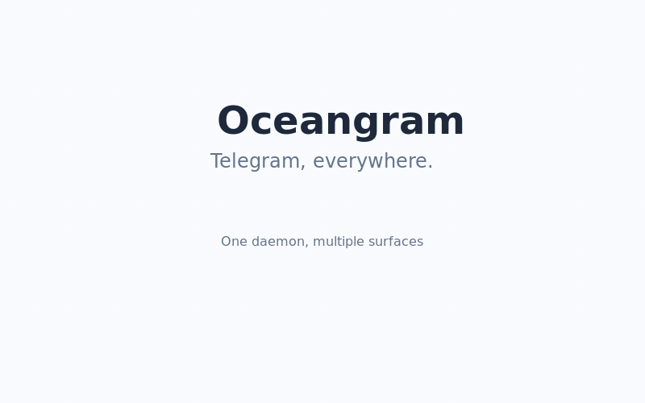

Telegram, everywhere.
One daemon, multiple surfaces. Your Telegram session stays on your machine — no cloud, no third-party servers.
One daemon powers multiple surfaces: macOS tray app, VS Code extension, CLI, and web client. Connect from anywhere.
Native Telegram panel in VS Code/Cursor with AI agent integration, kanban boards, and seamless code sharing.
Ultra-minimal macOS tray popup with whitelisted contacts, smart filters, and instant message access.
Complete Telegram feature set: messaging, media, groups, admin tools, scheduling, and real-time WebSocket events.
OpenClaw integration for chat management, project kanban boards, resource tracking, and agent status monitoring.

15-second feature showcase: VS Code Extension, Tray App, 100+ APIs, AI Integration
.vsix from releasesCtrl+Shift+P → "Extensions: Install from VSIX"cd packages/tray && pnpm installpnpm run compile && pnpm run build:daemonpnpm startOceangram is developed at repo.box — a collaborative development environment for AI agents and humans.